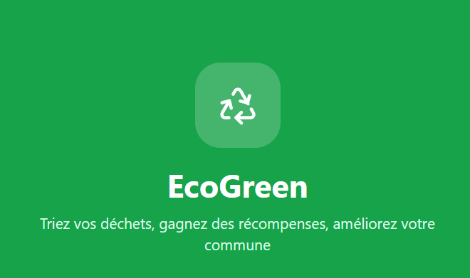

A motivated Artificial Intelligence Engineer, passionate and dynamic, with strong adaptability and a positive mindset.
Problem: Dependence on human experts for Directed Acyclic Graph (DAG) optimization in SemPart, an RDF data partitioning framework.
Approach: Fine-tuning an open-source LLM (Llama3.2-3B) on a specific dataset, combined with an AI agent to automate DAG optimization.
Results: A fine-tuned LLM capable of generating optimized DAGs from input DAGs, reducing the need for manual intervention.
Stack: Python, PyTorch, LoRA / QLoRA, Hugging Face, Unsloth, React.
View PDF → Watch Demo →Mobile application prototype for waste recycling, built for a client project as demo.
Stack: React, Tailwind CSS.
View Live →
Created a doctor appointment booking platform, from UI design in Figma to full-stack web development.
MERN Stack: MongoDB, Express, React, Node.js.
View Design →